2023 Advanced Higher Computing Science questions
Source: Scottish Qualifications Authority (SQA) / Qualifications Scotland. This is a StemInteract HTML companion, not an official HTML edition. Selectable text is supplied alongside original page images. Use the images or original PDF for equations, powers, fractions, vector notation, tables and diagrams; text extraction cannot fully preserve mathematical layout.
Jump to a question
PDF page 1
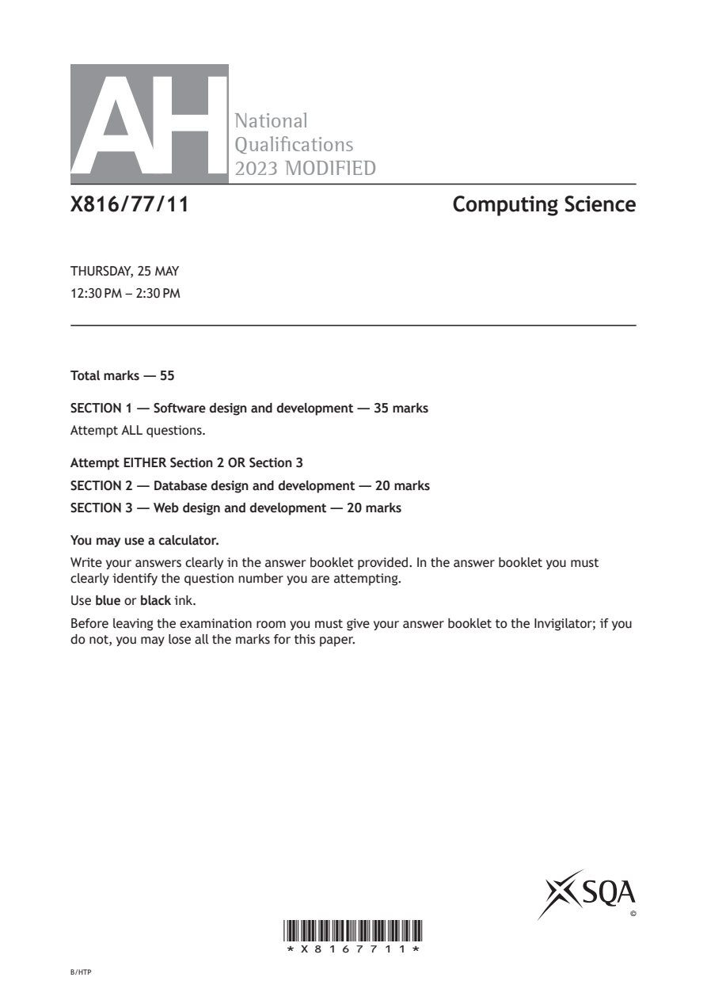
Selectable page text
AH
National
Qualications
2023 MODIFIED
X816/77/11 Computing Science
THURSDAY, 25 MAY
12:30 PM – 2:30 PM
Total marks — 55
SECTION 1 — Software design and development — 35 marks
Attempt ALL questions.
Attempt EITHER Section 2 OR Section 3
SECTION 2 — Database design and development — 20 marks
SECTION 3 — Web design and development — 20 marks
You may use a calculator.
Write your answers clearly in the answer booklet provided. In the answer booklet you must
clearly identify the question number you are attempting.
Use blue or black ink.
Before leaving the examination room you must give your answer booklet to the Invigilator; if you
do not, you may lose all the marks for this paper.
©
*X8167711*
B/HTPPDF page 2
Question 1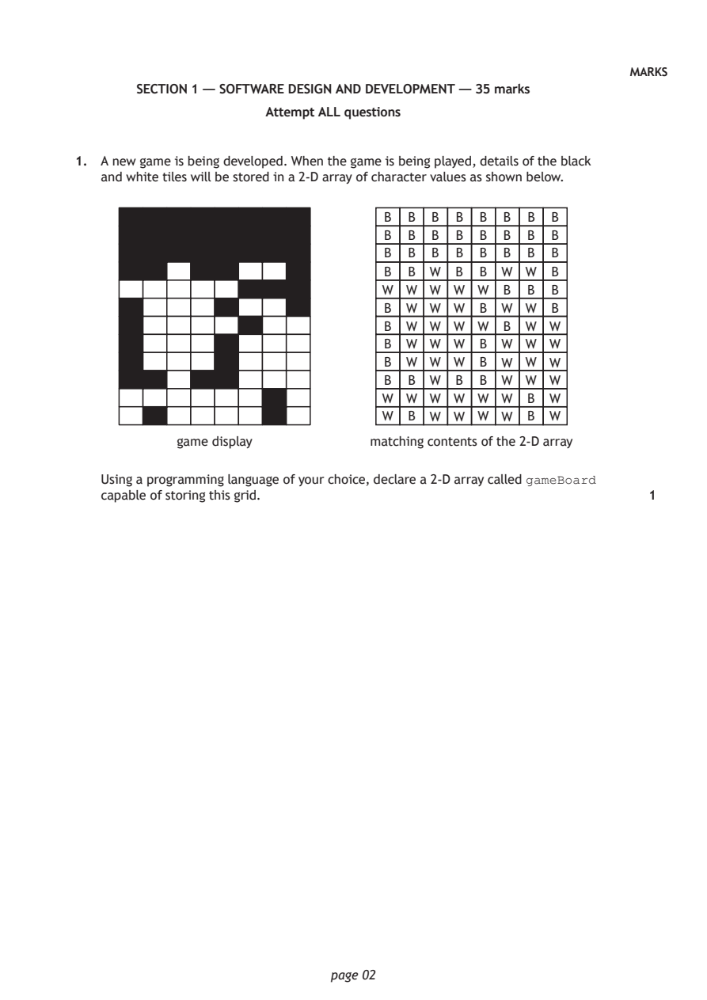
Selectable page text
MARKS
SECTION 1 — SOFTWARE DESIGN AND DEVELOPMENT — 35 marks
Attempt ALL questions
1. A new game is being developed. When the game is being played, details of the black
and white tiles will be stored in a 2‑D array of character values as shown below.
B B B B B B B B
B B B B B B B B
B B B B B B B B
B B W B B W W B
W W W W W B B B
B W W W B W W B
B W W W W B W W
B W W W B W W W
B W W W B W W W
B B W B B W W W
W W W W W W B W
W B W W W W B W
game display matching contents of the 2-D array
Using a programming language of your choice, declare a 2‑D array called
gameBoard
capable of storing this grid. 1
page 02PDF page 3
Question 2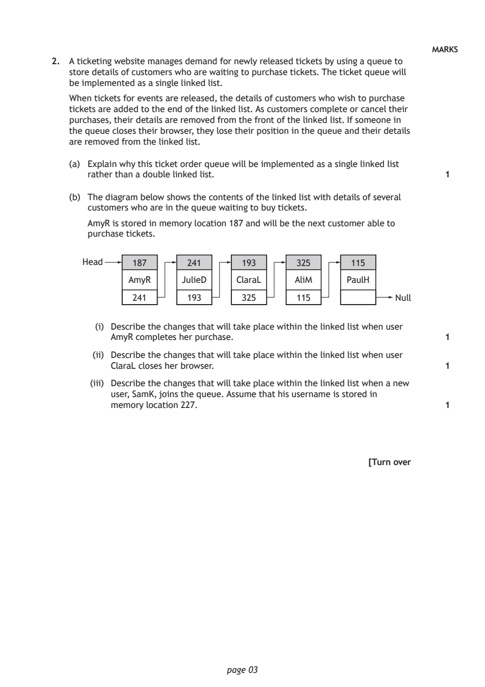
Selectable page text
MARKS
2. A ticketing website manages demand for newly released tickets by using a queue to
store details of customers who are waiting to purchase tickets. The ticket queue will
be implemented as a single linked list.
When tickets for events are released, the details of customers who wish to purchase
tickets are added to the end of the linked list. As customers complete or cancel their
purchases, their details are removed from the front of the linked list. If someone in
the queue closes their browser, they lose their position in the queue and their details
are removed from the linked list.
(a) Explain why this ticket order queue will be implemented as a single linked list
rather than a double linked list. 1
(b) The diagram below shows the contents of the linked list with details of several
customers who are in the queue waiting to buy tickets.
AmyR is stored in memory location 187 and will be the next customer able to
purchase tickets.
Head 187 241 193 325 115
AmyR JulieD ClaraL AliM PaulH
241 193 325 115 Null
(i) Describe the changes that will take place within the linked list when user
AmyR completes her purchase. 1
(ii) Describe the changes that will take place within the linked list when user
ClaraL closes her browser. 1
(iii) Describe the changes that will take place within the linked list when a new
user, SamK, joins the queue. Assume that his username is stored in
memory location 227. 1
[Turn over
page 03PDF page 4
Question 3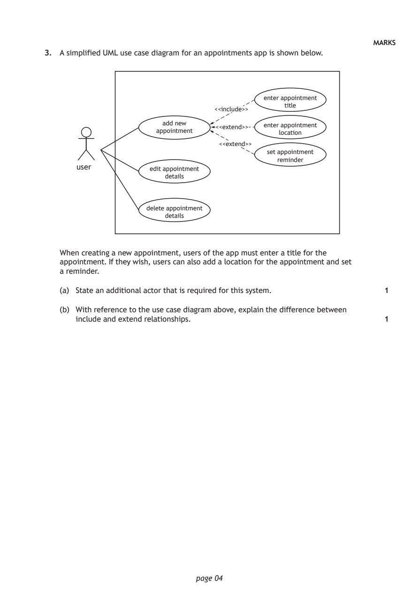
Selectable page text
MARKS
3. A simplified UML use case diagram for an appointments app is shown below.
enter appointment
title
<<include>>
add new <<extend>> enter appointment
appointment location
<<extend>>
set appointment
reminder
user
edit appointment
details
delete appointment
details
When creating a new appointment, users of the app must enter a title for the
appointment. If they wish, users can also add a location for the appointment and set
a reminder.
(a) State an additional actor that is required for this system. 1
(b) With reference to the use case diagram above, explain the difference between
include and extend relationships. 1
page 04PDF page 5

Selectable page text
[Turn over for next question
DO NOT WRITE ON THIS PAGE
page 05PDF page 6
Question 4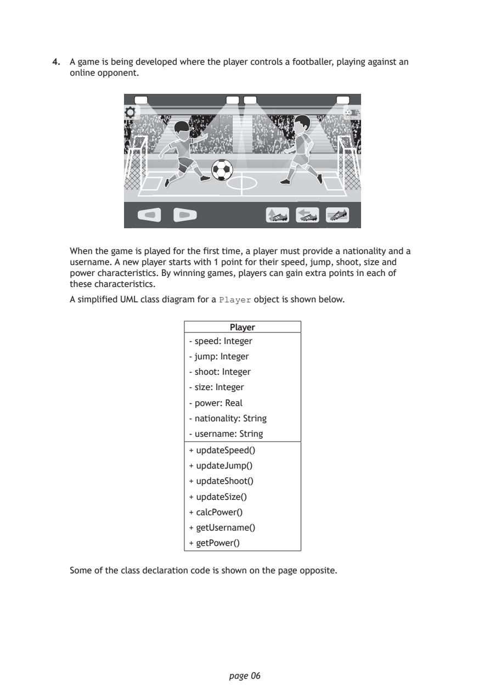
Selectable page text
4. A game is being developed where the player controls a footballer, playing against an
online opponent.
When the game is played for the first time, a player must provide a nationality and a
username. A new player starts with 1 point for their speed, jump, shoot, size and
power characteristics. By winning games, players can gain extra points in each of
these characteristics.
A simplified UML class diagram for a object is shown below.
Player
Player
‑ speed: Integer
‑ jump: Integer
‑ shoot: Integer
‑ size: Integer
‑ power: Real
‑ nationality: String
‑ username: String
+ updateSpeed()
+ updateJump()
+ updateShoot()
+ updateSize()
+ calcPower()
+ getUsername()
+ getPower()
Some of the class declaration code is shown on the page opposite.
page 06PDF page 7
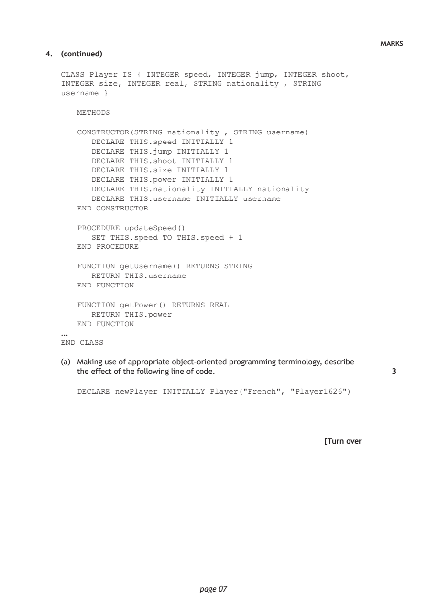
Selectable page text
MARKS
4. (continued)
CLASS Player IS { INTEGER speed, INTEGER jump, INTEGER shoot,
INTEGER size, INTEGER real, STRING nationality , STRING
username }
METHODS
CONSTRUCTOR(STRING nationality , STRING username)
DECLARE THIS.speed INITIALLY 1
DECLARE THIS.jump INITIALLY 1
DECLARE THIS.shoot INITIALLY 1
DECLARE THIS.size INITIALLY 1
DECLARE THIS.power INITIALLY 1
DECLARE THIS.nationality INITIALLY nationality
DECLARE THIS.username INITIALLY username
END CONSTRUCTOR
PROCEDURE updateSpeed()
SET THIS.speed TO THIS.speed + 1
END PROCEDURE
FUNCTION getUsername() RETURNS STRING
RETURN THIS.username
END FUNCTION
FUNCTION getPower() RETURNS REAL
RETURN THIS.power
END FUNCTION
...
END CLASS
(a) Making use of appropriate object‑oriented programming terminology, describe
the effect of the following line of code. 3
DECLARE newPlayer INITIALLY Player("French", "Player1626")
[Turn over
page 07PDF page 8
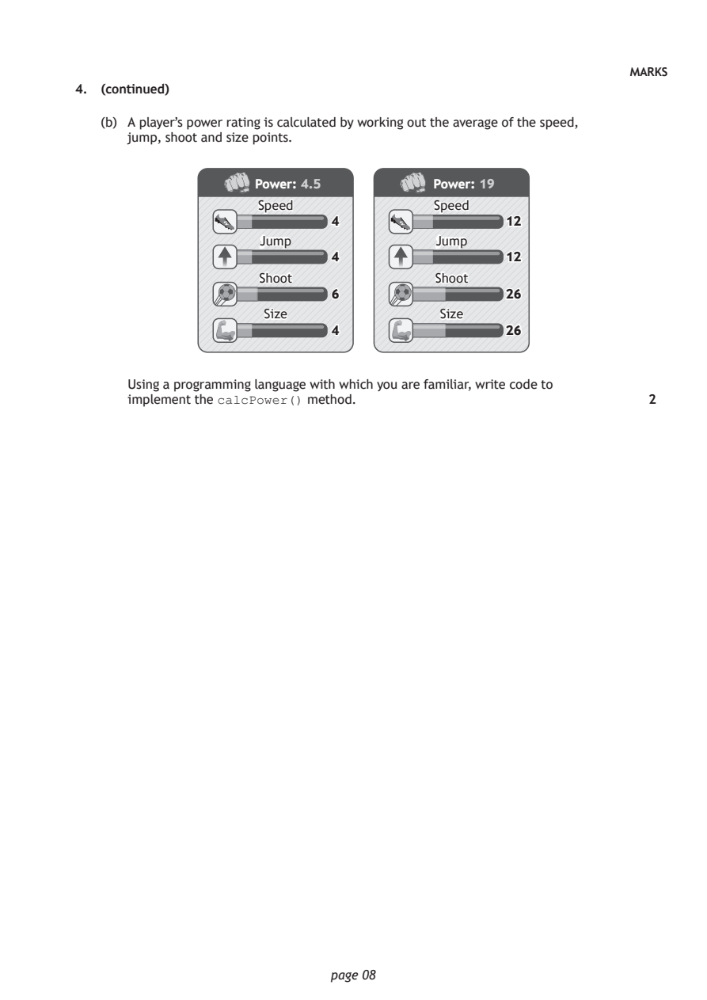
Selectable page text
MARKS
4. (continued)
(b) A player’s power rating is calculated by working out the average of the speed,
jump, shoot and size points.
Power: 4.5 Power: 19
Ssppeeeedd Ssppeeeedd
44 1122
Jjuummpp Jjuummpp
44 1122
Sshhoooott Sshhoooott
66 2266
Ssiizzee Ssiizzee
44 2266
Using a programming language with which you are familiar, write code to
implement the method. 2
calcPower()
page 08PDF page 9
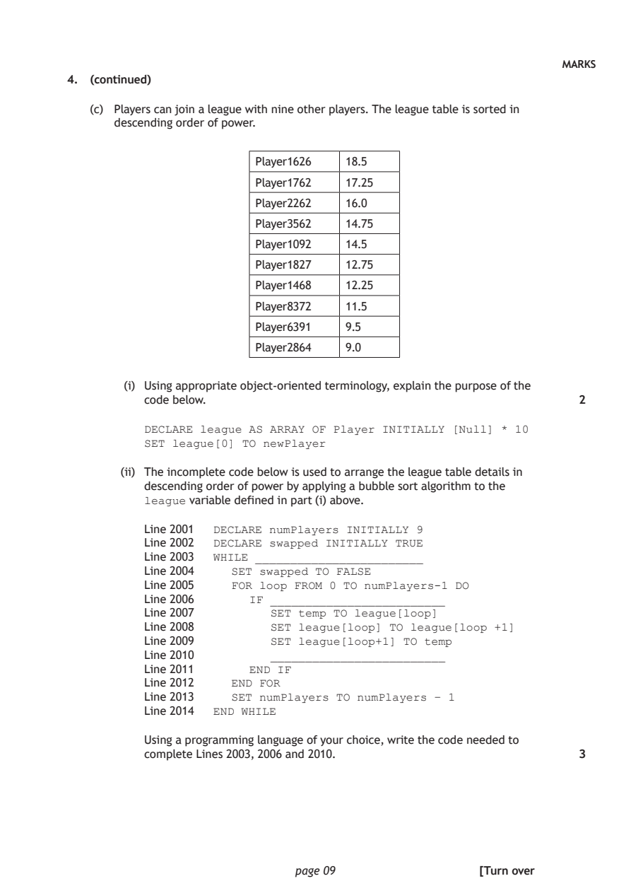
Selectable page text
MARKS
4. (continued)
(c) Players can join a league with nine other players. The league table is sorted in
descending order of power.
Player1626 18.5
Player1762 17.25
Player2262 16.0
Player3562 14.75
Player1092 14.5
Player1827 12.75
Player1468 12.25
Player8372 11.5
Player6391 9.5
Player2864 9.0
(i) Using appropriate object‑oriented terminology, explain the purpose of the
code below. 2
DECLARE league AS ARRAY OF Player INITIALLY [Null] * 10
SET league[0] TO newPlayer
(ii) The incomplete code below is used to arrange the league table details in
descending order of power by applying a bubble sort algorithm to the
variable defined in part (i) above.
league
Line 2001
DECLARE numPlayers INITIALLY 9
Line 2002
DECLARE swapped INITIALLY TRUE
Line 2003
WHILE ________________________
Line 2004
SET swapped TO FALSE
Line 2005
FOR loop FROM 0 TO numPlayers-1 DO
Line 2006
IF _________________________
Line 2007
SET temp TO league[loop]
Line 2008
SET league[loop] TO league[loop +1]
Line 2009
SET league[loop+1] TO temp
Line 2010
_________________________
Line 2011
END IF
Line 2012
END FOR
Line 2013
SET numPlayers TO numPlayers − 1
Line 2014
END WHILE
Using a programming language of your choice, write the code needed to
complete Lines 2003, 2006 and 2010. 3
page 09 [Turn overPDF page 10
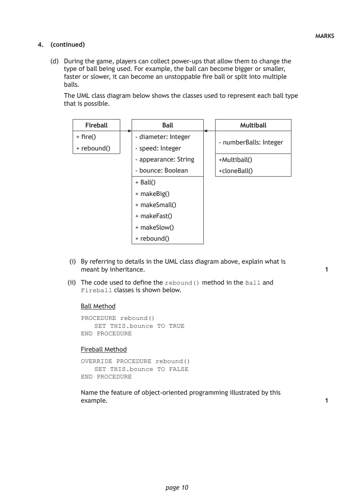
Selectable page text
MARKS
4. (continued)
(d) During the game, players can collect power‑ups that allow them to change the
type of ball being used. For example, the ball can become bigger or smaller,
faster or slower, it can become an unstoppable fire ball or split into multiple
balls.
The UML class diagram below shows the classes used to represent each ball type
that is possible.
Fireball Ball Multiball
+ fire() ‑ diameter: Integer
‑ numberBalls: Integer
+ rebound() ‑ speed: Integer
‑ appearance: String +Multiball()
‑ bounce: Boolean +cloneBall()
+ Ball()
+ makeBig()
+ makeSmall()
+ makeFast()
+ makeSlow()
+ rebound()
(i) By referring to details in the UML class diagram above, explain what is
meant by inheritance. 1
(ii) The code used to define the method in the and
rebound() Ball
classes is shown below.
Fireball
Ball Method
PROCEDURE rebound()
SET THIS.bounce TO TRUE
END PROCEDURE
Fireball Method
OVERRIDE PROCEDURE rebound()
SET THIS.bounce TO FALSE
END PROCEDURE
Name the feature of object‑oriented programming illustrated by this
example. 1
page 10PDF page 11
Selectable page text
[Turn over for next question
DO NOT WRITE ON THIS PAGE
page 11PDF page 12
Question 5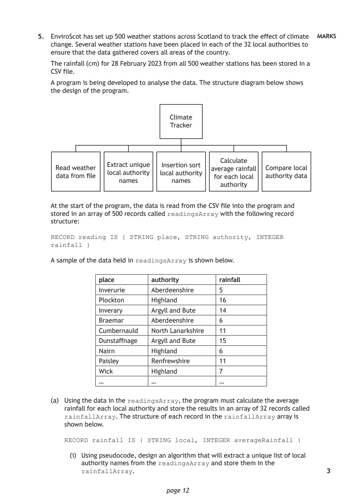
Selectable page text
5. EnviroScot has set up 500 weather stations across Scotland to track the effect of climate MARKS
change. Several weather stations have been placed in each of the 32 local authorities to
ensure that the data gathered covers all areas of the country.
The rainfall (cm) for 28 February 2023 from all 500 weather stations has been stored in a
CSV file.
A program is being developed to analyse the data. The structure diagram below shows
the design of the program.
Climate
Tracker
Calculate
Extract unique Insertion sort
Read weather average rainfall Compare local
local authority local authority
data from file for each local authority data
names names
authority
At the start of the program, the data is read from the CSV file into the program and
stored in an array of 500 records called with the following record
readingsArray
structure:
RECORD reading IS { STRING place, STRING authority, INTEGER
rainfall }
A sample of the data held in is shown below.
readingsArray
place authority rainfall
Inverurie Aberdeenshire 5
Plockton Highland 16
Inverary Argyll and Bute 14
Braemar Aberdeenshire 6
Cumbernauld North Lanarkshire 11
Dunstaffnage Argyll and Bute 15
Nairn Highland 6
Paisley Renfrewshire 11
Wick Highland 7
… … …
(a) Using the data in the , the program must calculate the average
readingsArray
rainfall for each local authority and store the results in an array of 32 records called
. The structure of each record in the array is
rainfallArray rainfallArray
shown below.
RECORD rainfall IS { STRING local, INTEGER averageRainfall }
(i) Using pseudocode, design an algorithm that will extract a unique list of local
authority names from the and store them in the
readingsArray
. 3
rainfallArray
page 12PDF page 13
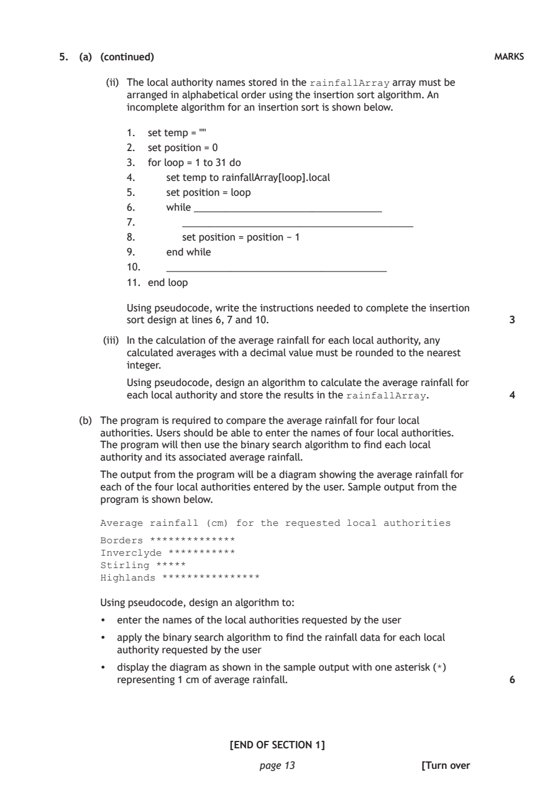
Selectable page text
5. (a) (continued) MARKS
(ii) The local authority names stored in the array must be
rainfallArray
arranged in alphabetical order using the insertion sort algorithm. An
incomplete algorithm for an insertion sort is shown below.
1. set temp = ""
2. set position = 0
3. for loop = 1 to 31 do
4. set temp to rainfallArray[loop].local
5. set position = loop
6. while ___________________________________
7. ___________________________________________
8. set position = position − 1
9. end while
10. _________________________________________
11. end loop
Using pseudocode, write the instructions needed to complete the insertion
sort design at lines 6, 7 and 10. 3
(iii) In the calculation of the average rainfall for each local authority, any
calculated averages with a decimal value must be rounded to the nearest
integer.
Using pseudocode, design an algorithm to calculate the average rainfall for
each local authority and store the results in the . 4
rainfallArray
(b) The program is required to compare the average rainfall for four local
authorities. Users should be able to enter the names of four local authorities.
The program will then use the binary search algorithm to find each local
authority and its associated average rainfall.
The output from the program will be a diagram showing the average rainfall for
each of the four local authorities entered by the user. Sample output from the
program is shown below.
Average rainfall (cm) for the requested local authorities
Borders **************
Inverclyde ***********
Stirling *****
Highlands ****************
Using pseudocode, design an algorithm to:
• enter the names of the local authorities requested by the user
• apply the binary search algorithm to find the rainfall data for each local
authority requested by the user
• display the diagram as shown in the sample output with one asterisk ( )
*
representing 1 cm of average rainfall. 6
[END OF SECTION 1]
page 13 [Turn overPDF page 14
Question 6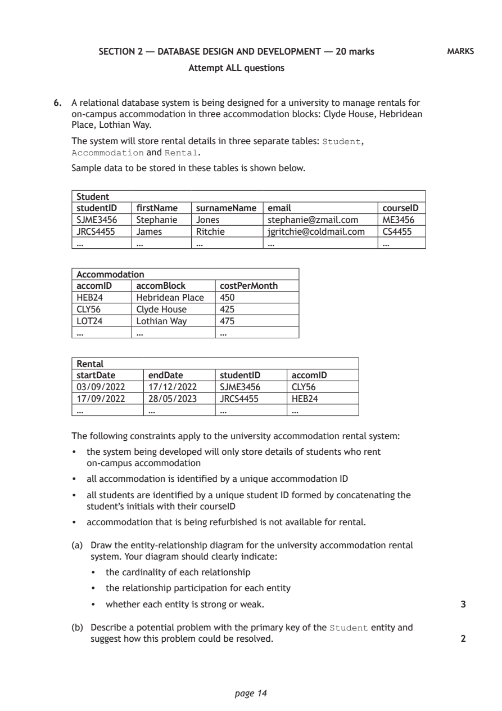
Selectable page text
SECTION 2 — DATABASE DESIGN AND DEVELOPMENT — 20 marks MARKS
Attempt ALL questions
6. A relational database system is being designed for a university to manage rentals for
on‑campus accommodation in three accommodation blocks: Clyde House, Hebridean
Place, Lothian Way.
The system will store rental details in three separate tables: ,
Student
and .
Accommodation Rental
Sample data to be stored in these tables is shown below.
Student
studentID firstName surnameName email courseID
SJME3456 Stephanie Jones stephanie@zmail.com ME3456
JRCS4455 James Ritchie jgritchie@coldmail.com CS4455
… … … … …
Accommodation
accomID accomBlock costPerMonth
HEB24 Hebridean Place 450
CLY56 Clyde House 425
LOT24 Lothian Way 475
… … …
Rental
startDate endDate studentID accomID
03/09/2022 17/12/2022 SJME3456 CLY56
17/09/2022 28/05/2023 JRCS4455 HEB24
… … … …
The following constraints apply to the university accommodation rental system:
• the system being developed will only store details of students who rent
on‑campus accommodation
• all accommodation is identified by a unique accommodation ID
• all students are identified by a unique student ID formed by concatenating the
student’s initials with their courseID
• accommodation that is being refurbished is not available for rental.
(a) Draw the entity‑relationship diagram for the university accommodation rental
system. Your diagram should clearly indicate:
• the cardinality of each relationship
• the relationship participation for each entity
• whether each entity is strong or weak. 3
(b) Describe a potential problem with the primary key of the entity and
Student
suggest how this problem could be resolved. 2
page 14PDF page 15
Question 7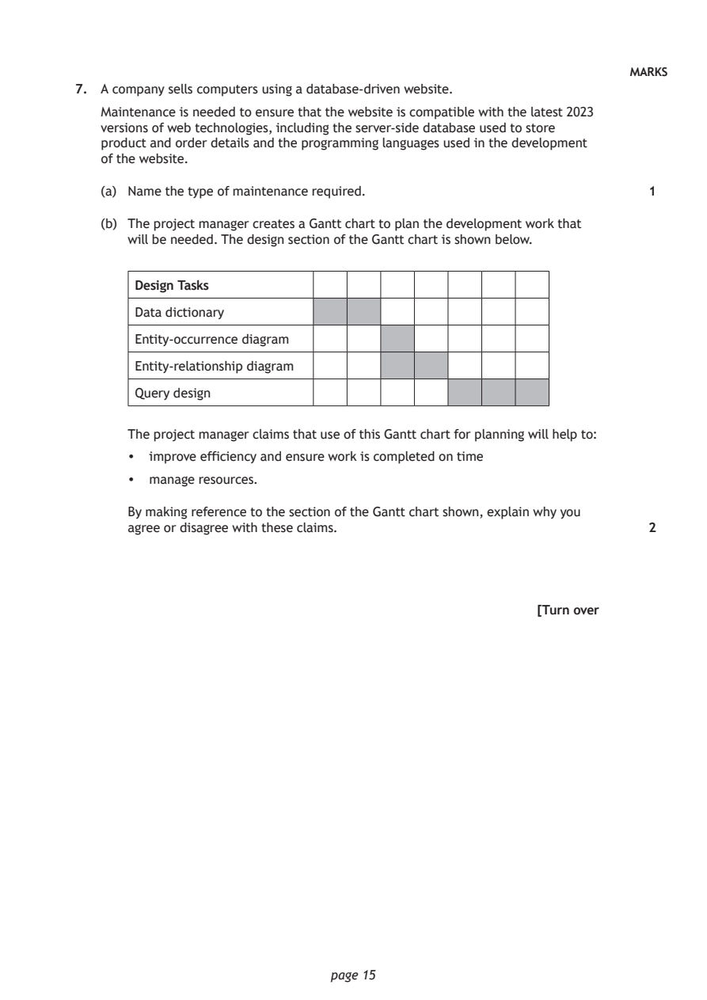
Selectable page text
MARKS
7. A company sells computers using a database‑driven website.
Maintenance is needed to ensure that the website is compatible with the latest 2023
versions of web technologies, including the server‑side database used to store
product and order details and the programming languages used in the development
of the website.
(a) Name the type of maintenance required. 1
(b) The project manager creates a Gantt chart to plan the development work that
will be needed. The design section of the Gantt chart is shown below.
Design Tasks
Data dictionary
Entity‑occurrence diagram
Entity‑relationship diagram
Query design
The project manager claims that use of this Gantt chart for planning will help to:
• improve efficiency and ensure work is completed on time
• manage resources.
By making reference to the section of the Gantt chart shown, explain why you
agree or disagree with these claims. 2
[Turn over
page 15PDF page 16
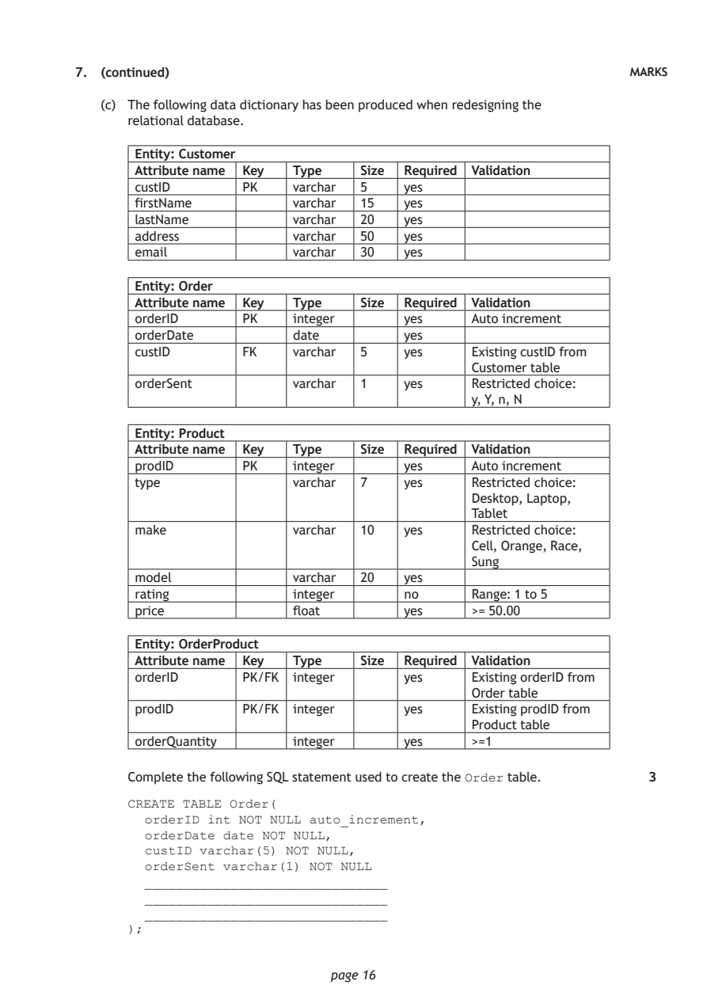
Selectable page text
7. (continued) MARKS
(c) The following data dictionary has been produced when redesigning the
relational database.
Entity: Customer
Attribute name Key Type Size Required Validation
custID PK varchar 5 yes
firstName varchar 15 yes
lastName varchar 20 yes
address varchar 50 yes
email varchar 30 yes
Entity: Order
Attribute name Key Type Size Required Validation
orderID PK integer yes Auto increment
orderDate date yes
custID FK varchar 5 yes Existing custID from
Customer table
orderSent varchar 1 yes Restricted choice:
y, Y, n, N
Entity: Product
Attribute name Key Type Size Required Validation
prodID PK integer yes Auto increment
type varchar 7 yes Restricted choice:
Desktop, Laptop,
Tablet
make varchar 10 yes Restricted choice:
Cell, Orange, Race,
Sung
model varchar 20 yes
rating integer no Range: 1 to 5
price float yes >= 50.00
Entity: OrderProduct
Attribute name Key Type Size Required Validation
orderID PK/FK integer yes Existing orderID from
Order table
prodID PK/FK integer yes Existing prodID from
Product table
orderQuantity integer yes >=1
Complete the following SQL statement used to create the table. 3
Order
CREATE TABLE Order(
orderID int NOT NULL auto_increment,
orderDate date NOT NULL,
custID varchar(5) NOT NULL,
orderSent varchar(1) NOT NULL
_______________________________
_______________________________
_______________________________
);
page 16PDF page 17
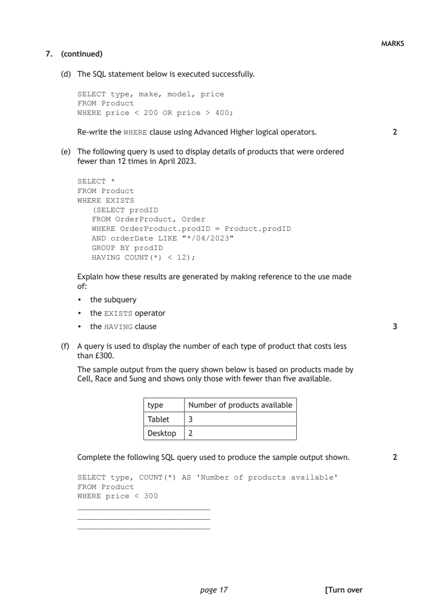
Selectable page text
MARKS
7. (continued)
(d) The SQL statement below is executed successfully.
SELECT type, make, model, price
FROM Product
WHERE price < 200 OR price > 400;
Re‑write the clause using Advanced Higher logical operators. 2
WHERE
(e) The following query is used to display details of products that were ordered
fewer than 12 times in April 2023.
SELECT *
FROM Product
WHERE EXISTS
(SELECT prodID
FROM OrderProduct, Order
WHERE OrderProduct.prodID = Product.prodID
AND orderDate LIKE "*/04/2023"
GROUP BY prodID
HAVING COUNT(*) < 12);
Explain how these results are generated by making reference to the use made
of:
• the subquery
• the operator
EXISTS
• the clause 3
HAVING
(f) A query is used to display the number of each type of product that costs less
than £300.
The sample output from the query shown below is based on products made by
Cell, Race and Sung and shows only those with fewer than five available.
type Number of products available
Tablet 3
Desktop 2
Complete the following SQL query used to produce the sample output shown. 2
SELECT type, COUNT(*) AS 'Number of products available'
FROM Product
WHERE price < 300
____________________________
____________________________
____________________________
page 17 [Turn overPDF page 18
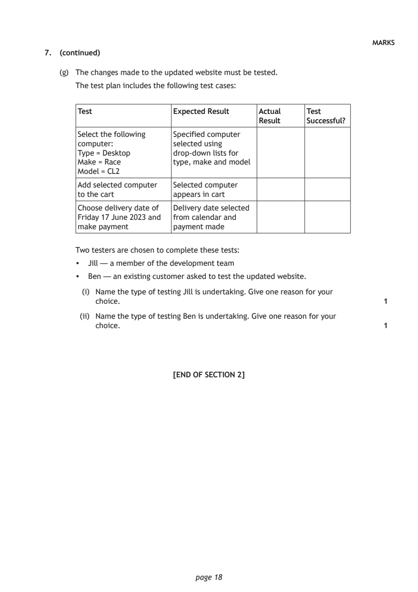
Selectable page text
MARKS
7. (continued)
(g) The changes made to the updated website must be tested.
The test plan includes the following test cases:
Test Expected Result Actual Test
Result Successful?
Select the following Specified computer
computer: selected using
Type = Desktop drop‑down lists for
Make = Race type, make and model
Model = CL2
Add selected computer Selected computer
to the cart appears in cart
Choose delivery date of Delivery date selected
Friday 17 June 2023 and from calendar and
make payment payment made
Two testers are chosen to complete these tests:
• Jill — a member of the development team
• Ben — an existing customer asked to test the updated website.
(i) Name the type of testing Jill is undertaking. Give one reason for your
choice. 1
(ii) Name the type of testing Ben is undertaking. Give one reason for your
choice. 1
[END OF SECTION 2]
page 18PDF page 19
Question 8Selectable page text
MARKS
SECTION 3 — WEB DESIGN AND DEVELOPMENT — 20 marks
Attempt ALL questions
8. The CSS code used to display images on a website is shown below.
img
{ width: 50%;
}
@media only screen and (max-width:767px)
{ img
{ width: 100%;
}
}
Explain the effect of this CSS code when displaying website content. 2
[Turn over
page 19PDF page 20
Question 9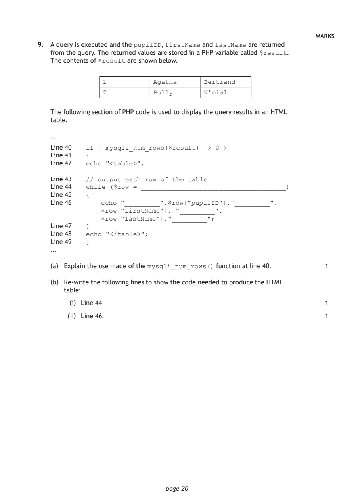
Selectable page text
MARKS
9. A query is executed and the , and are returned
pupilID firstName lastName
from the query. The returned values are stored in a PHP variable called .
$result
The contents of are shown below.
$result
1 Agatha Bertrand
2 Polly N’mial
The following section of PHP code is used to display the query results in an HTML
table.
...
Line 40
if ( mysqli_num_rows($result) > 0 )
Line 41
{
Line 42
echo "<table>";
Line 43
// output each row of the table
Line 44
while ($row = _____________________________________)
Line 45
{
Line 46
echo "_________".$row["pupilID"]."_________".
$row["firstName"]. "_________".
$row["lastName"]."_________";
Line 47
}
Line 48
echo "</table>";
Line 49
}
...
(a) Explain the use made of the function at line 40. 1
mysqli_num_rows()
(b) Re‑write the following lines to show the code needed to produce the HTML
table:
(i) Line 44 1
(ii) Line 46. 1
page 20PDF page 21
Question 10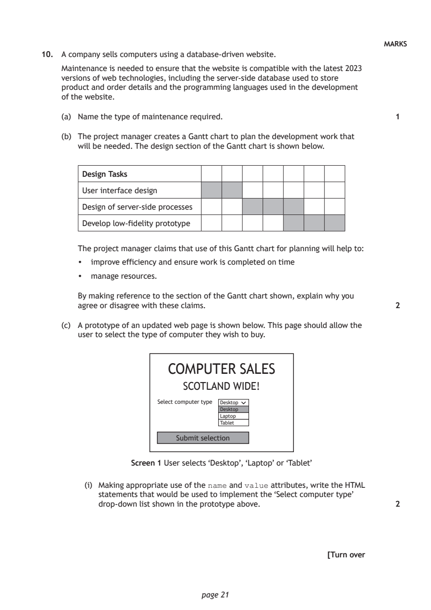
Selectable page text
MARKS
10. A company sells computers using a database‑driven website.
Maintenance is needed to ensure that the website is compatible with the latest 2023
versions of web technologies, including the server‑side database used to store
product and order details and the programming languages used in the development
of the website.
(a) Name the type of maintenance required. 1
(b) The project manager creates a Gantt chart to plan the development work that
will be needed. The design section of the Gantt chart is shown below.
Design Tasks
User interface design
Design of server‑side processes
Develop low‑fidelity prototype
The project manager claims that use of this Gantt chart for planning will help to:
• improve efficiency and ensure work is completed on time
• manage resources.
By making reference to the section of the Gantt chart shown, explain why you
agree or disagree with these claims. 2
(c) A prototype of an updated web page is shown below. This page should allow the
user to select the type of computer they wish to buy.
COMPUTER SALES
SCOTLAND WIDE!
Select computer type Desktop
Desktop
Laptop
Tablet
Submit selection
Screen 1 User selects ‘Desktop’, ‘Laptop’ or ‘Tablet’
(i) Making appropriate use of the and attributes, write the HTML
name value
statements that would be used to implement the ‘Select computer type’
drop‑down list shown in the prototype above. 2
[Turn over
page 21PDF page 22
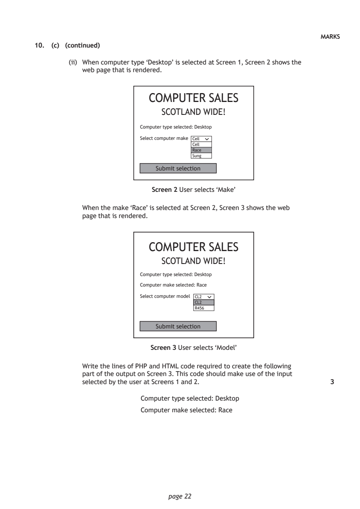
Selectable page text
MARKS
10. (c) (continued)
(ii) When computer type ‘Desktop’ is selected at Screen 1, Screen 2 shows the
web page that is rendered.
COMPUTER SALES
SCOTLAND WIDE!
Computer type selected: Desktop
Select computer make Cell
Cell
Race
Sung
Submit selection
Screen 2 User selects ‘Make’
When the make ‘Race’ is selected at Screen 2, Screen 3 shows the web
page that is rendered.
COMPUTER SALES
SCOTLAND WIDE!
Computer type selected: Desktop
Computer make selected: Race
Select computer model CL2
CL2
R456
Submit selection
Screen 3 User selects ‘Model’
Write the lines of PHP and HTML code required to create the following
part of the output on Screen 3. This code should make use of the input
selected by the user at Screens 1 and 2. 3
Computer type selected: Desktop
Computer make selected: Race
page 22PDF page 23
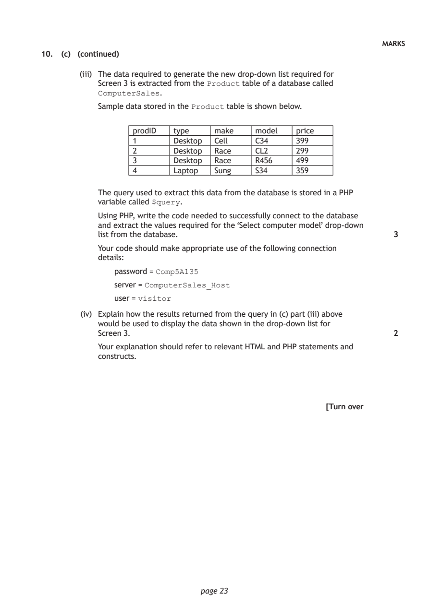
Selectable page text
MARKS
10. (c) (continued)
(iii) The data required to generate the new drop‑down list required for
Screen 3 is extracted from the table of a database called
Product
.
ComputerSales
Sample data stored in the table is shown below.
Product
prodID type make model price
1 Desktop Cell C34 399
2 Desktop Race CL2 299
3 Desktop Race R456 499
4 Laptop Sung S34 359
The query used to extract this data from the database is stored in a PHP
variable called .
$query
Using PHP, write the code needed to successfully connect to the database
and extract the values required for the ‘Select computer model’ drop‑down
list from the database. 3
Your code should make appropriate use of the following connection
details:
password =
Comp5A135
server =
ComputerSales_Host
user =
visitor
(iv) Explain how the results returned from the query in (c) part (iii) above
would be used to display the data shown in the drop‑down list for
Screen 3. 2
Your explanation should refer to relevant HTML and PHP statements and
constructs.
[Turn over
page 23PDF page 24
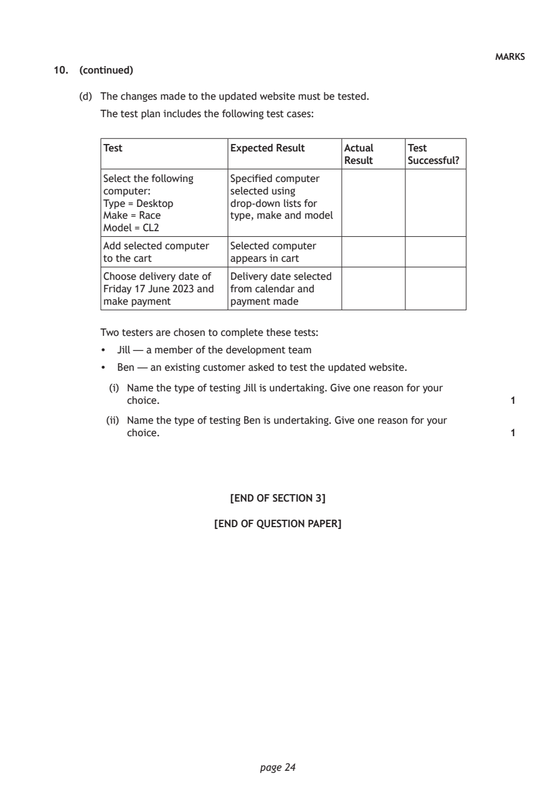
Selectable page text
MARKS
10. (continued)
(d) The changes made to the updated website must be tested.
The test plan includes the following test cases:
Test Expected Result Actual Test
Result Successful?
Select the following Specified computer
computer: selected using
Type = Desktop drop‑down lists for
Make = Race type, make and model
Model = CL2
Add selected computer Selected computer
to the cart appears in cart
Choose delivery date of Delivery date selected
Friday 17 June 2023 and from calendar and
make payment payment made
Two testers are chosen to complete these tests:
• Jill — a member of the development team
• Ben — an existing customer asked to test the updated website.
(i) Name the type of testing Jill is undertaking. Give one reason for your
choice. 1
(ii) Name the type of testing Ben is undertaking. Give one reason for your
choice. 1
[END OF SECTION 3]
[END OF QUESTION PAPER]
page 24